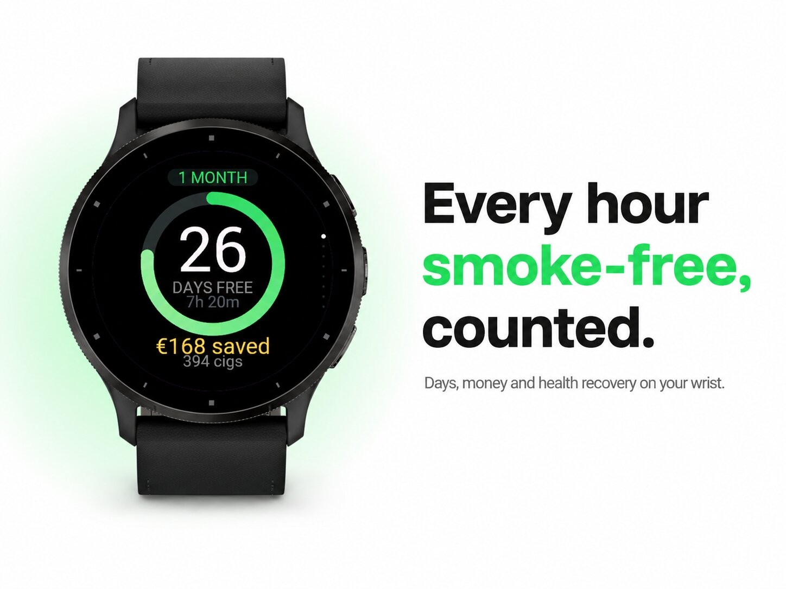
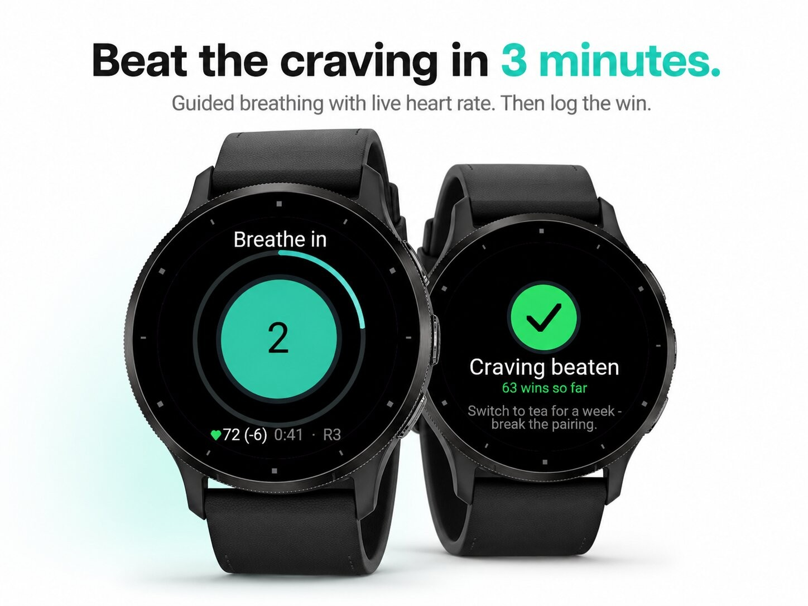
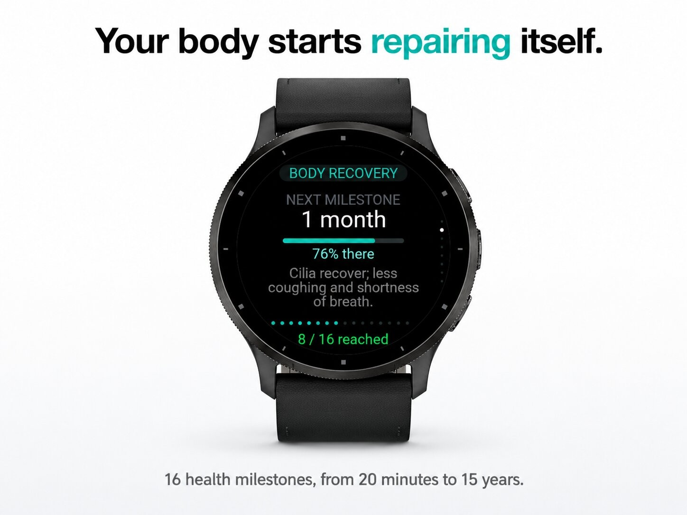
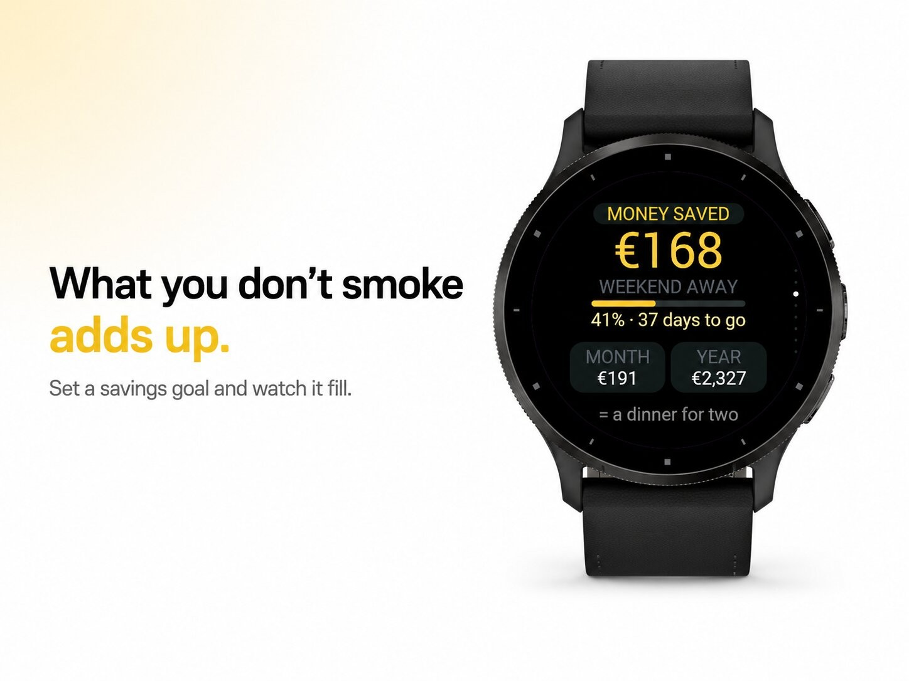
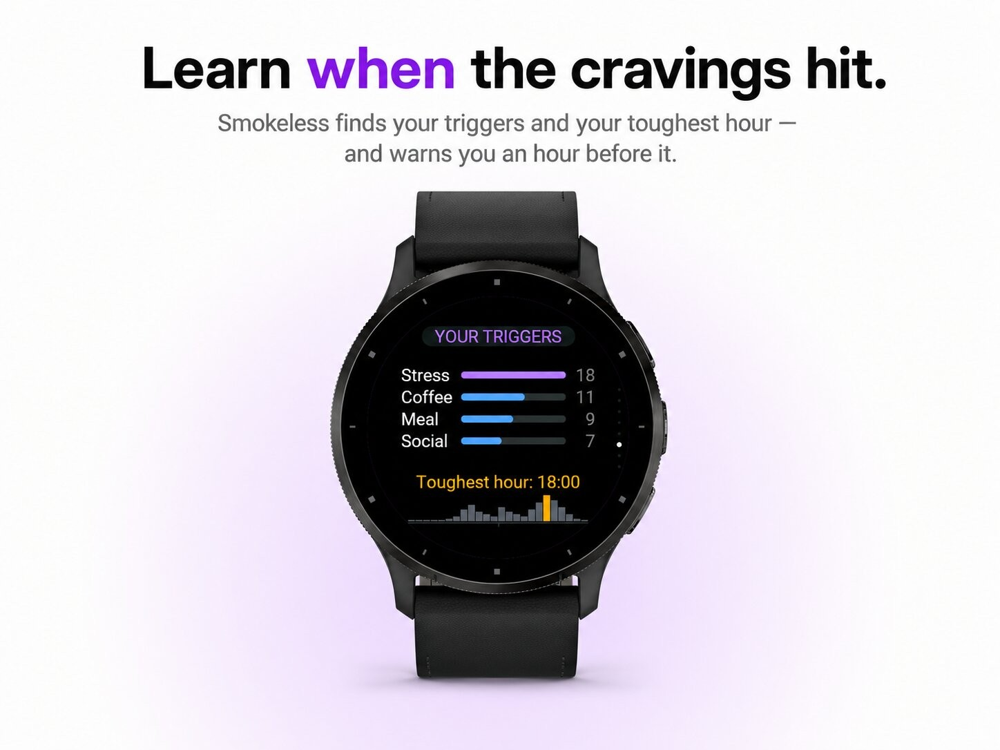

Health & habits · Device app
Quit-smoking tracker with cravings, savings and badges.





Smokeless turns quitting into something you can see on your wrist: how long you have been smoke-free, what you have saved, what your body is repairing right now, and what to do when the craving hits.
Set your quit moment and the app starts counting. Quit last week, last month or years ago? Pick the date and everything is calculated from there. Works for cigarettes, vaping and nicotine pouches.
Open the craving flow and breathe through it. Choose 4-7-8, box breathing or a calm 4-6 rhythm; your heart rate is shown live and the app tells you how many beats per minute you have come down. A three-minute urge ring runs alongside, because that is roughly how long a craving lasts.
Afterwards you log what happened — resisted or slipped — and which trigger it was: stress, coffee, alcohol, boredom, after a meal, other people, and more. If you slipped, you decide yourself whether the streak stands or the clock restarts; your best streak is banked either way, so you never lose what you already did.
Milestone alerts when your body reaches the next stage, a nudge when a badge unlocks, a daily check-in at an hour you choose, and — once the app knows your pattern — a heads-up one hour before your personal danger hour. The glance on your watch face shows your smoke-free time, your savings and the next milestone without opening the app at all.
In Garmin Connect you set your product (cigarettes, vape, pouches), how much you used per day, pack size, price and currency, nicotine strength, your savings goal, up to three personal reasons, your breathing pattern, the reminder hour and the language.
Interface in English, Dutch, German, French and Spanish. Everything stays on the watch: no account, no internet connection, no data sent anywhere.
Smokeless is not medical advice. If you need help quitting, talk to your doctor about the options.